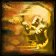
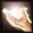
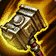
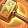

Balance Changes
Balance Changes



Holy Wrath can now be cast on any target and stuns Undead and Demons for up to 2 sec.

Lay on Hands cooldown reduced to 20 min.

Hammer of Wrath is now a Retribution spell (was Holy) and scales with attack power and spell damage.


 New Spells and Abilities
New Spells and Abilities

Avenging Wrath is now trainable at level 50:
 Hero's Journey
Hero's Journey
labels the expansion Blizzard made that change. labels an idea Blizzard made during SoD. labels a new idea I came up with.